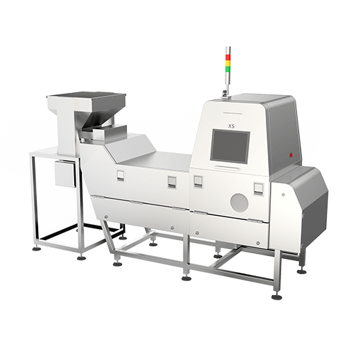
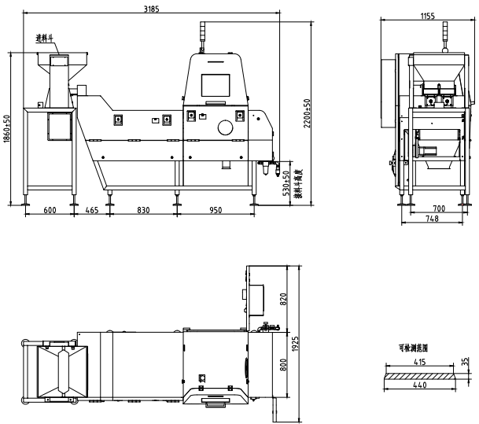

60XS机型产品信息

标准振动器尺寸（点击查看）

关闭窗口
名称：一体式多用途X射线检测机
检测灵敏度：不锈钢球(SUS ball)≥Φ0.3mm
喷阀数：60个
防护等级：IP54
整机重量: 850kg
皮带宽度: 470mm
人机界面：17寸液晶触摸屏
传送带速度：10-100m/min，可调
受检品尺寸：宽度≤460mm 高度≤20mm
外型尺寸:3185mm×1155mm×2250mm±30
设备特色: 在检测精度不降低的情况下
同比S机型产量提升30%左右
射源: 自制射源寿命一般在8000～10000个小时
电源: 单相AC220V±10%， 50/60Hz，2kW
产量参考:
脱水胡萝卜约2吨/小时，脱水青红椒约1.2吨/小时
龙井茶约200公斤/小时，武夷山岩茶700公斤/小时
铁观音茶约1吨/小时，绿茶约在1~1.5吨/小时
葡萄干约2吨～3吨/小时，南瓜籽约2.5～3吨/小时
花椒约800～1200公斤/小时